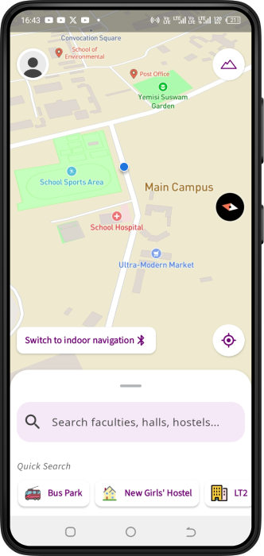

An intuitive navigation app built for the Federal University of Technology Minna. Provides real time directions, buildings, points of interest and indoor navigation with BLE beacons. Features interactive maps, authentication, and search. You can also update the database with new locations when signed in as an admin.
Kotlin, Jetpack Compose, MVVM, Firebase, Algolia, Mapbox, Git, Github, Kotlin Coroutines, Kotlin Flows, Bluetooth Low Energy